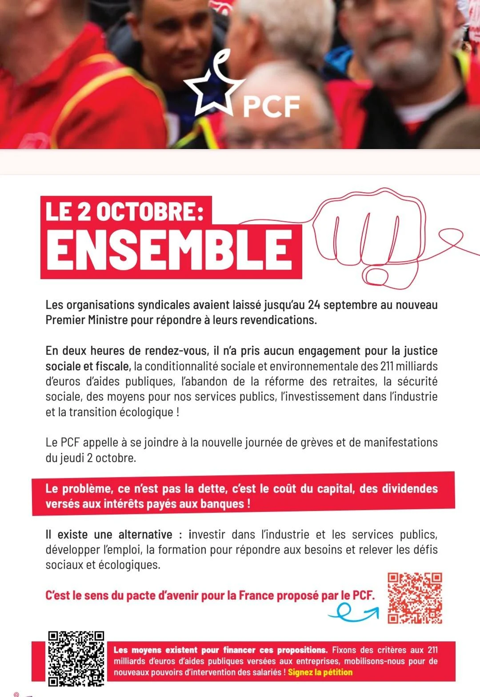

Appel à la mobilisation
Le 2 octobre, ensemble pour les salaires, les retraites et les services publics
Date indiquée par Facebook · 30 septembre 2025
Repères éditoriaux
Nous avons relayé l’appel de l’intersyndicale à se mobiliser le 2 octobre 2025. Les rendez-vous annoncés étaient à 5 h à La Crèche au Carrefour Contact, à 11 h à la gare de Niort et place Flandres-Dunkerque à Thouars, puis à 14 h place Saint-Jacques à Bressuire.
Texte conservé avec la publication
Le 2 octobre, ENSEMBLE pour :
Nos salaires,
Nos retraites,
Les services publics,
La justice sociale...

Sources
Archive rouge · export Facebook · AR-0002-FB-00999
À lire aussi · À Niort, dans la rue le 2 octobre pour la justice sociale